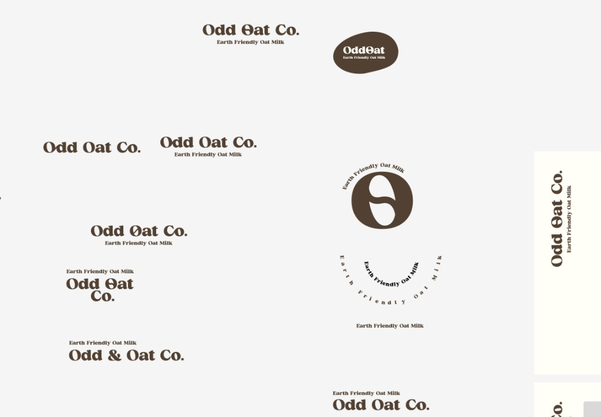
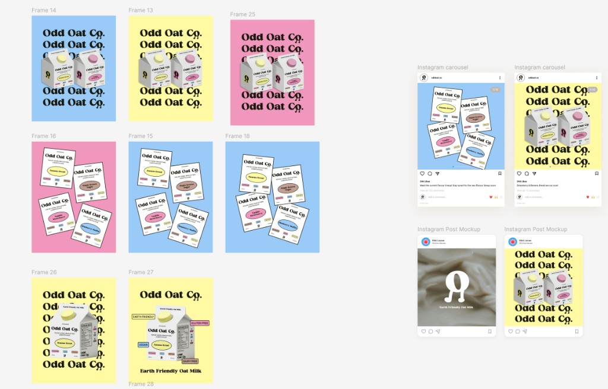
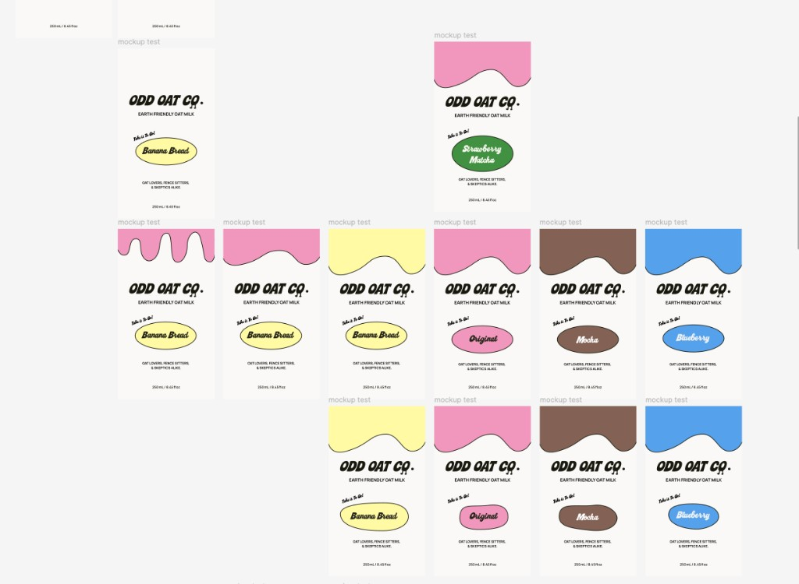
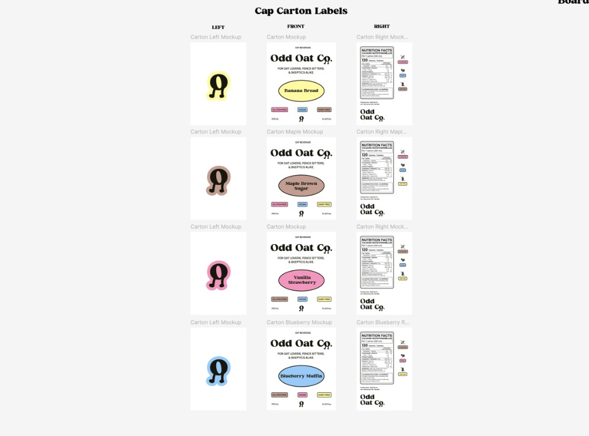
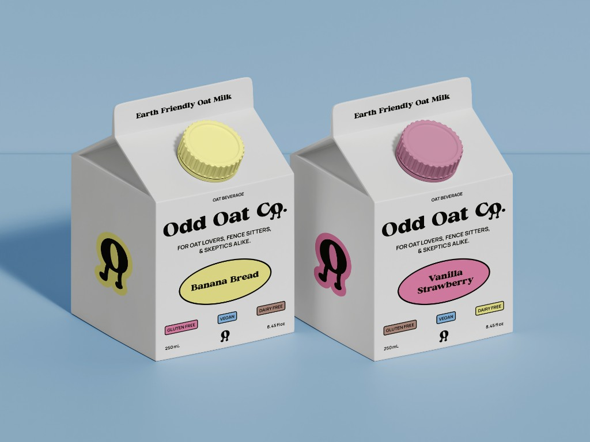
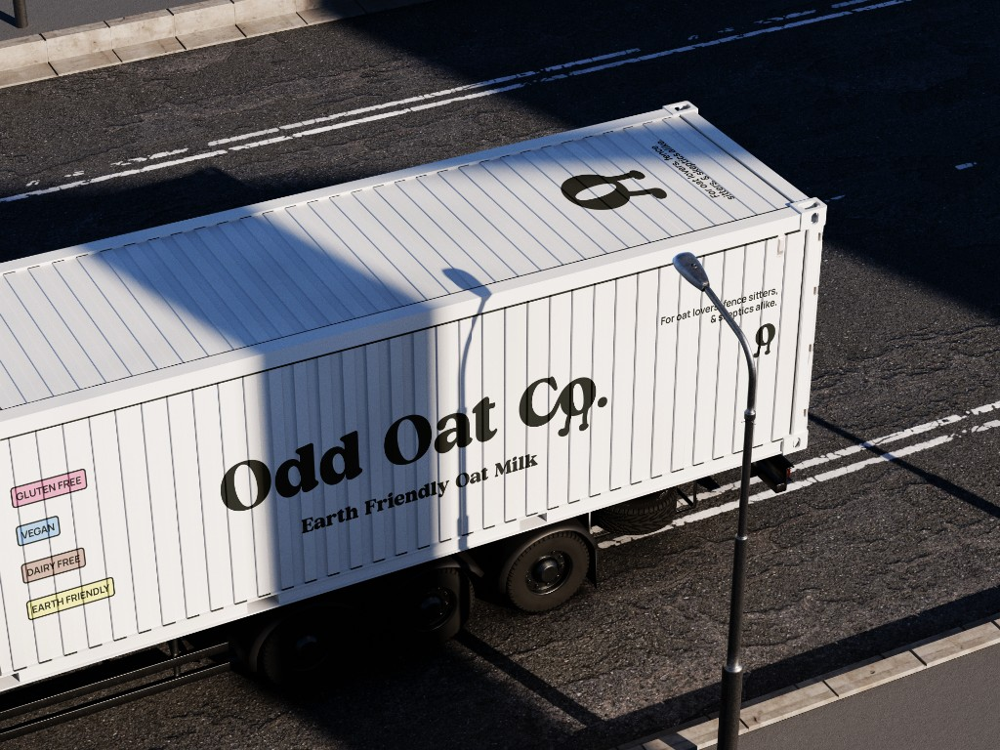
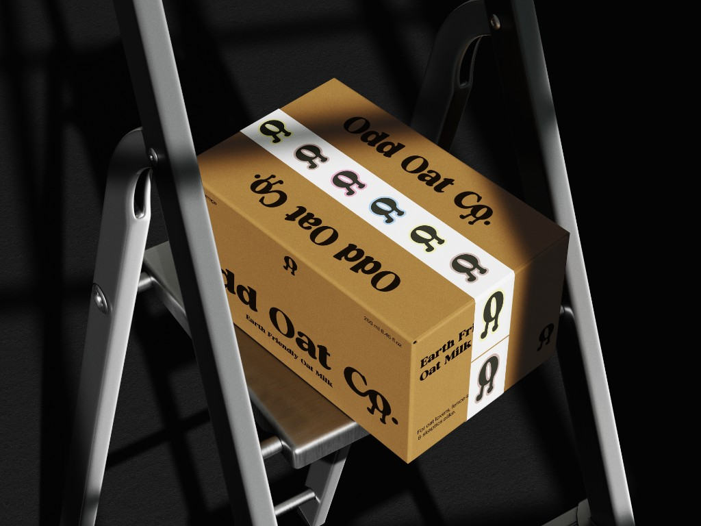
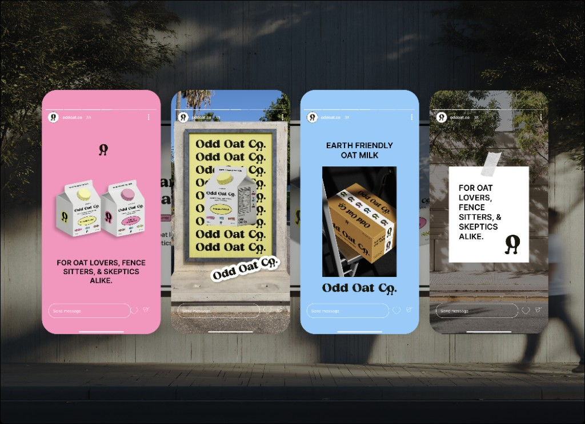
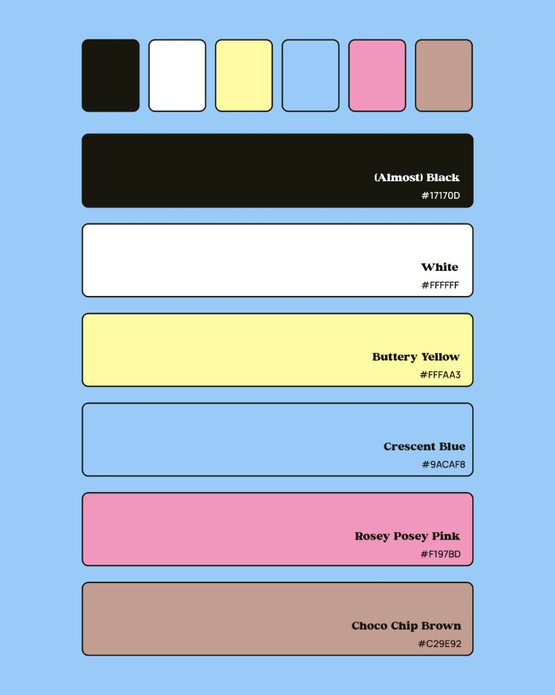
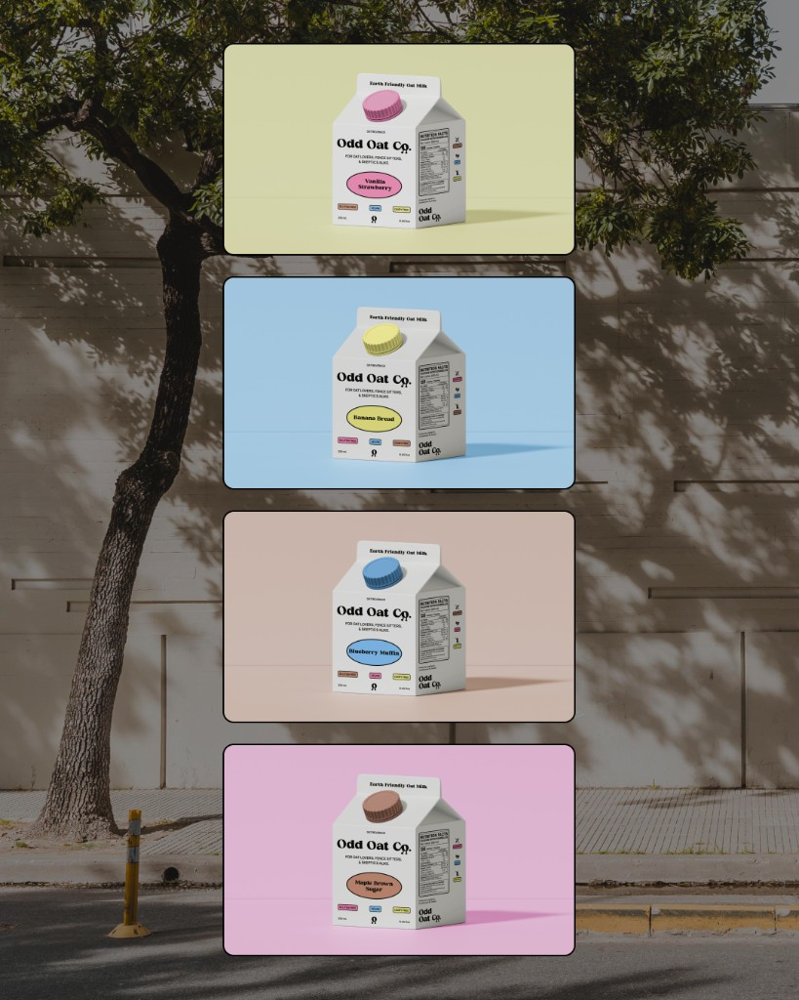

BRANDING · 2025 · STUDENT WORK
Odd Oat Co.
Project Details
Timeline
September – November
2025
Skills
Visual Design
Branding
Design Systems
Tools Used
Figma
Adobe Illustrator
Project Overview
Odd Oat Co. is an Earth friendly oat milk brand, which focuses on sustainability, convenience, and unique flavours.
Why make an oat milk brand?
I like oat milk, and wanted to try experimenting with something new and fun for my branding class. I focused on using friendly language and eye-catching colours.
The Making of Odd Oat Co.
Before getting into the visuals, I seriously struggled with multiple parts of this project. I had a hard time making decisions around the mockups, the brand language, and when to keep iterating on small details versus when to move on.
It was really rewarding, though, to see all that time turn into something I’m proud of. It might not be the prettiest, but it was my first full branding project and I’m happy with how it turned out.
The Ugly




Visual Identity
Here are some of my mockups for cartons, social media, extra assets, and a little logo animation.






Final Thoughts
This was mainly a showcase project for my branding class, but I had a lot of fun with it. I learned a lot about consistency in branding—keeping the same tone, colours, and visual language across cartons, social mockups, and other assets made the brand feel cohesive and recognizable. It was a great chance to experiment with something new and push the visual identity in a few different directions.